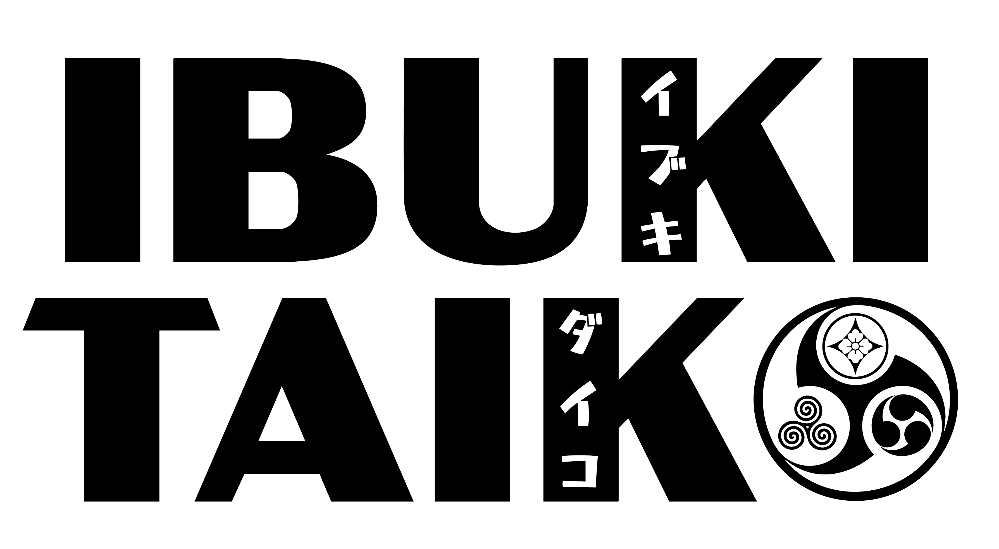
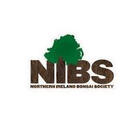
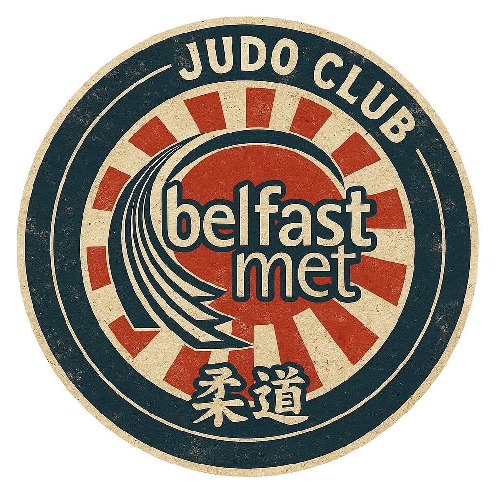
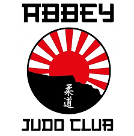
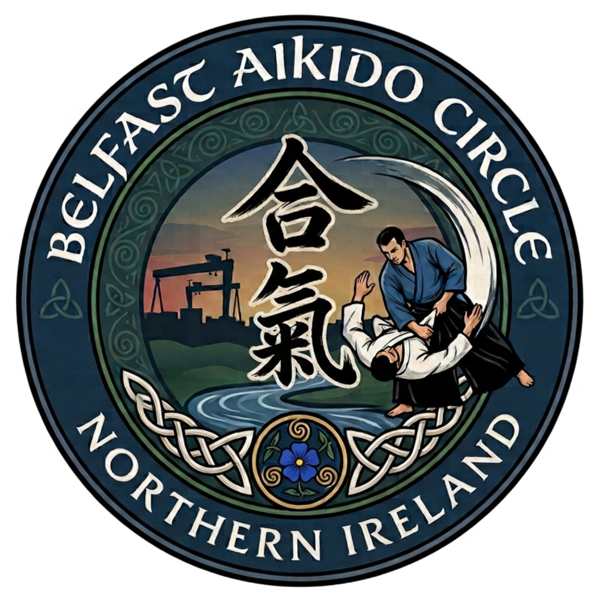

30th Anniversary
MATSURI Festival 祭り
Saturday 19th September 2026
10:30–17:30 (Opening Ceremony 11:00)
W5 LIFE at the O2 Belfast, Queens Quay, BT3 9QQ
10:30–17:30 (Opening Ceremony 11:00)
W5 LIFE at the O2 Belfast, Queens Quay, BT3 9QQ
Join us for a vibrant, family-friendly Japanese festival, 祭り MATSURI, as JSNI marks its 30th Anniversary! Enjoy a full day of performances, workshops, demonstrations and hands-on activities for all ages. Come along, explore, learn, and celebrate the richness of Japanese culture in Belfast.
The festival will be delivered by JSNI volunteers along with various societies and clubs which engage in Japanese art, culture and sport.
Highlights
見どころ
- Ibuki Taiko — Japanese taiko drumming performance
- Japanese dance
- Japanese folklore storytelling by Masako Carey
- Martial arts demonstrations — Belfast MET Judo Club, Abbey Judo Club, Ojika Kendo Club, Iaido group, Sumo na hÉireann
- Calligraphy and origami workshops
- Ikebana and bonsai exhibition, courtesy of the Northern Ireland Bonsai Society (NIBS)
- Children's festival games — yo-yo fishing, goldfish scooping, origami and a paper sumo match
- A big Obon circle dance to close the day, celebrating 30 years of JSNI
Programme
プログラム
| Time | What's on |
|---|---|
| 10:30 | Doors open |
| 11:00 | Opening ceremony |
| 11:00–17:00 | Workshops, demonstrations, exhibitions, market and festival games running throughout the day — see the festival map below |
| 17:00 | Big Bon Odori circle dance |
| 17:30 | Close |
Festival Map
Workshops, the Art Stage, Green Zone and Language/Books area are on the 1st floor; the Kids Zone, Markets, Active Stage (martial arts & taiko) and JSNI Gallery are on the Ground Floor.
Free Entry. Please bring cash for JSNI registration and market stalls. Children should be accompanied by a responsible adult throughout the event.
This festival is our opening event for the 2026–27 season — JSNI membership registration will be available on the day.
This festival is our opening event for the 2026–27 season — JSNI membership registration will be available on the day.
Corporate membership Contact us
Supported By
With thanks to




